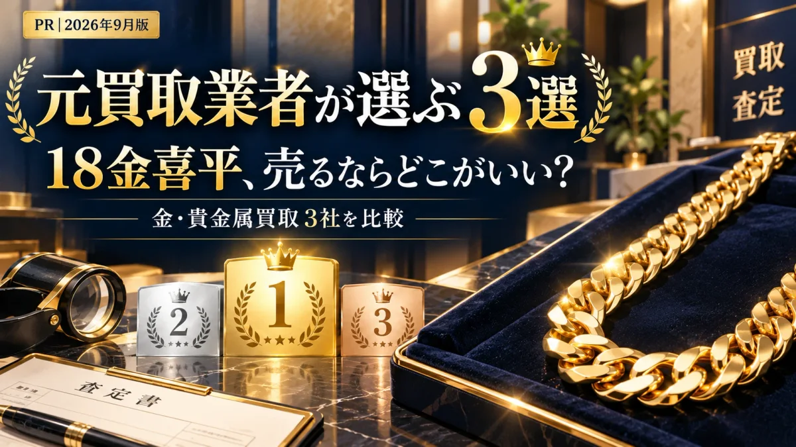
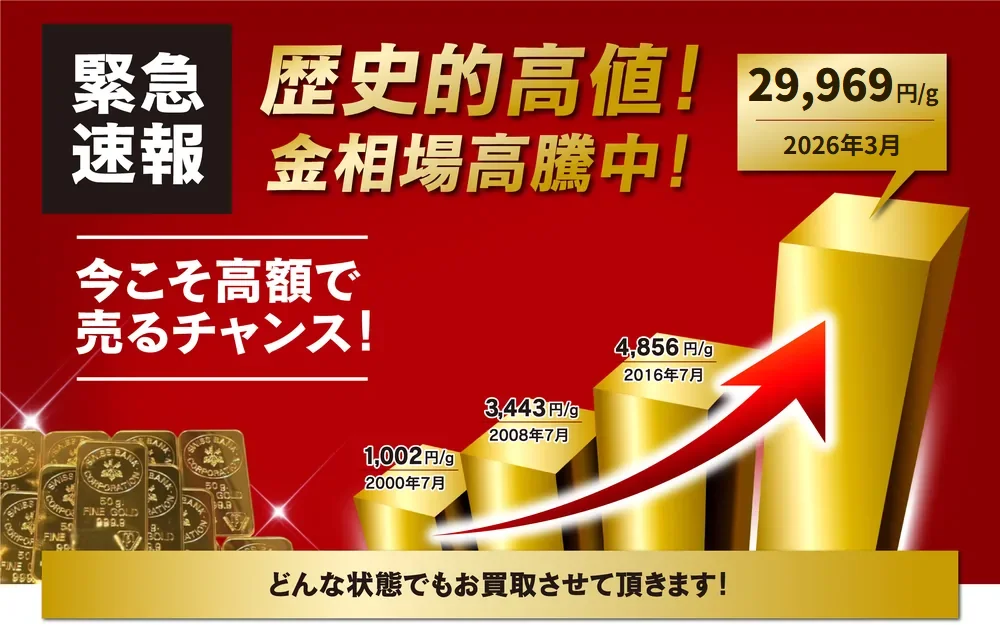
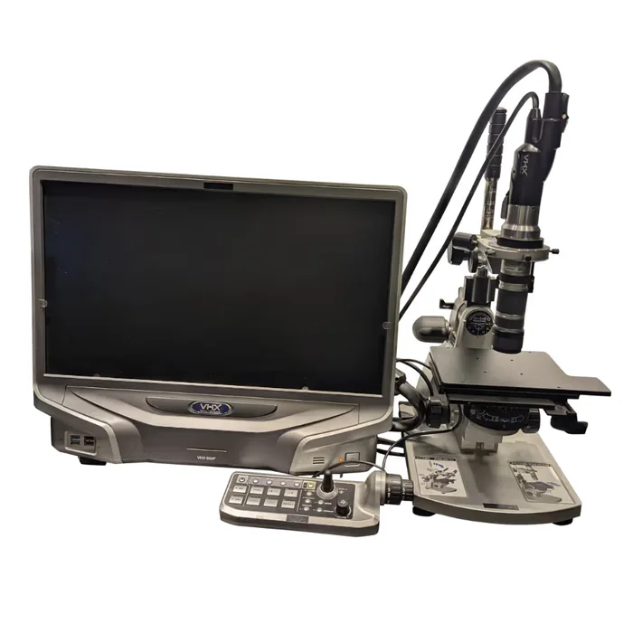
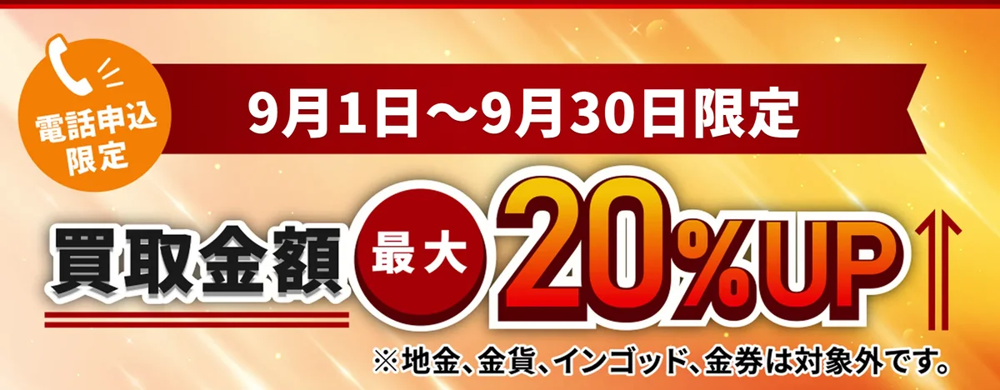
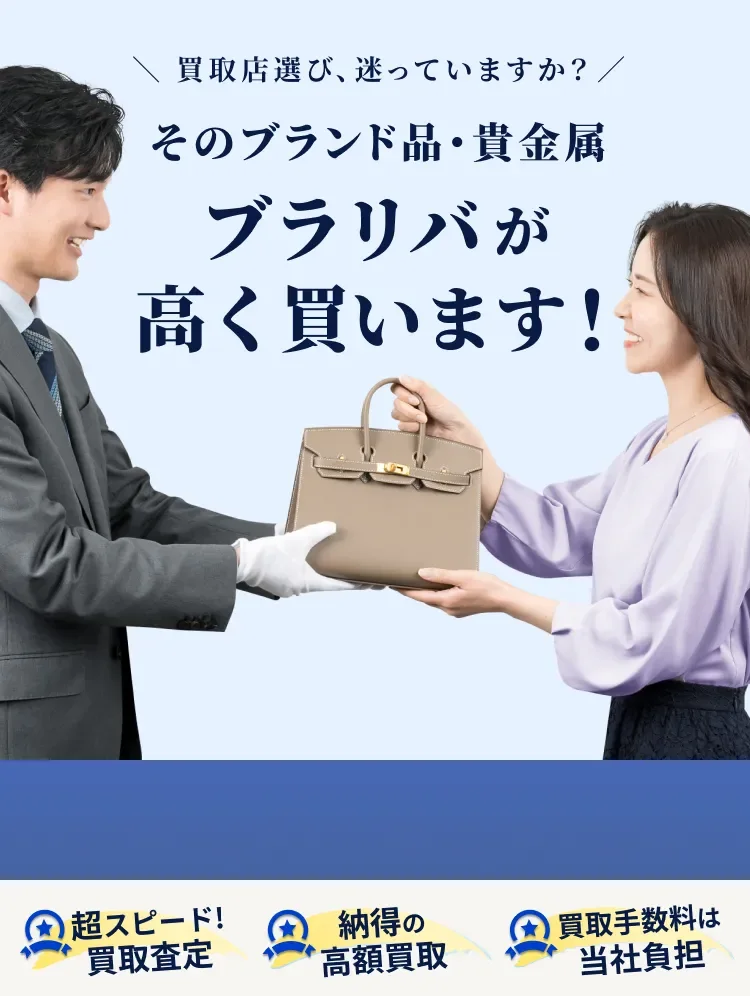

18金の喜平ネックレス、どこで売る？元買取業者が選んだ買取店3選

「喜平って、今いくらで売れるの？」
「近所のお店で、安く買いたたかれない…？」
そんな不安、ありませんか？
その気持ち、よくわかります。
喜平は金額が大きいぶん、どこに持っていくか迷いますよね。
でも、安心してください。
この記事を読み終えるころには、
どこに持っていけばいいか、はっきりしているはずです。
元買取業者の目線でいうと、大事なのはこれだけ。
「全部でいくらになるか」でお店を選ぶ
ネットに出ている「今日の金の値段」だけで決めると、損をしやすいんです。
こんな人は読んでみて
- 使っていない喜平が、引き出しにしまってある
- 重さも、今いくらかも知らない
- 近所のお店で、安く買いたたかれないか不安
- どこに売ればいいか迷っている
1つでも当てはまったら、お店選びで受け取る金額が変わります
※掲載の評価・順位は編集部の主観的な比較で、買取価格を保証するものではありません。
喜平が売れる買取店 3社を比較
まずは分かりやすく、比較表にしました。
表は横にスクロール可能
| 買取店 | 総合評価 | 金の手数料 | 買取方法 | 出張料 | キャンセル料 | 査定のしかた | 特徴 |
|---|---|---|---|---|---|---|---|
| 公式サイト | まねきや★★★★★5.0点編集部おすすめ | 0円 キャンペーン中 | 店舗・出張・宅配 | 無料 | 無料 | X線分析装置 マイクロスコープ | 業者の値段で買取。電話予約で最大20%UP（9月30日まで） |
| 公式サイト | おたからや★★★★☆4.5点 | 無料 | 店舗・出張 | 無料 | 無料 | プロの鑑定士 | 全国1,980店舗以上。近くで持ち込める |
| 公式サイト | ブラリバ★★★★☆4.5点 | — | 店舗・出張・宅配 | 要問合せ | 無料 | 査定士 | 全店舗が駅から5分以内。即日現金化 |
表は横にスクロール可能
おすすめする理由は、この4つです。
- 買い取る前に、業者どうしが取引するときの値段を伝えてくれる
- 18金の喜平ネックレスの買取実績あり（13万〜39.6万円）
- Googleの口コミ評価4.8（最大全店平均・2026年3月現在）
- 全国30店舗以上。お店・出張・宅配から選べる
※業者どうしの値段は、まねきや公式サイトの説明です。買取実績はまねきや公式サイトより（2025年5〜6月・4件）。重さ・状態は公表されていません。当時の金の値段での一例です。
しかも今は、金の買取手数料が無料。
さらに今なら、電話で申し込むと
買取額が最大20%UP（9月30日まで）。
金の値段は毎日変わる。先のことは、だれにも分かりません
今日の値段は見たし、
もう少し上がってから売ろうかな…
そう思っていませんか？
実は、金の値段は毎日変わります。
3月から9月までの半年でも、かなり大きく動きました。

この半年で、1gあたり約5,800円も動いています。
喜平は重いぶん、この動きも大きくなります。
50gの喜平なら、約22万円ぶんの動きです。
この先、上がるか下がるかは、
プロにも、だれにも分かりません。
分かるのは「今日ならいくらか」だけ
もちろん、待つのもひとつの選び方です。
でも、待つと決めるにも、まず今の額を知っておくと判断しやすくなります。
だから、ネットの値段を見て終わりにせず、
「自分の喜平は、今、全部でいくらか」を聞いておきましょう。
※金の値段は田中貴金属の店頭小売価格（買うときの値段・税込）で、2026年3月3日と9月25日を比べたものです。18金は金75%として計算した目安です。過去の値動きは、将来を約束するものではありません。
ただし、あわてて近くのお店に持っていくのも注意。
貴金属の買取の相談は、5年で5倍以上に
2020年度は165件、2025年度は937件。
国民生活センターには、こんな相談が寄せられています。
- 査定だけのつもりだったのに、断りきれずに売ってしまった
- 「古い金は価値が下がる」とせかされて、手放してしまった
- 手数料やキャンセル料の説明がなかった
- 最後にもらえる金額を、先に教えてくれる
- 手数料が引かれない
- 断っても、お金がかからない
※国民生活センター公表資料（2026年9月2日）をもとに要約しています。
お店で売ったら、取り消せないことに注意
お店に持ち込んで売った場合、あとからクーリング・オフはできません。
家に来てもらう出張買取なら、原則として、書面を受け取ってから8日間はクーリング・オフができます。
※例外もあります。くわしくは消費者庁「特定商取引法ガイド」で確認できます。
だから、「最初にどのお店に持っていくか」がとても大事なんです。
自分の「喜平」に合ったお店選びが重要
同じ18金の喜平でも、お店によって金額が変わることがあります。
引かれるお金や、値段の決め方が、
お店ごとにちがうからです。
そこで元買取業者の私が見るのは、この3つ。
- 全部でいくらになる？
「1gいくら」ではなく、合計の金額を聞く - 何か引かれない？
手数料が引かれると、最後にもらえる金額が減る - 値段の決め方を教えてくれる？
1gあたりいくらか、何が引かれるかを、売る前に説明してくれるか
この3つを満たしているお店を、これから紹介します。
「遠回りせずに、損せず売りたい！」
という場合は、ぜひ参考にしてみてくださいね。
この3つを満たすお店として、候補になるのが、
＼まねきや／
喜平を売るならここ！買取店3選（査定無料）
🥇第1位：まねきや｜業者どうしの値段で買い取り（PR）

まねきやのおすすめポイント
- 買い取る前に業者どうしの値段を伝えてくれる
- 18金の喜平の買取実績あり（13万〜39.6万円）
- 金の買取手数料が無料（条件あり）
- 刻印が読めない金もX線で調べて査定
- 電話予約で買取額最大20%UP（9月30日まで）
- 金の手数料
- ◎
- 無料※
- 査定の機械
- ◎
- X線分析装置
- 店舗
- ○
- 全国30店舗以上
- 電話受付
- ○
- 9:00〜21:00
- 売り方
- ◎
- お店・出張・宅配から選べる
- 断ったとき
- ◎
- 査定料・キャンセル料は無料
※金の買取手数料は「ネットで見た」と伝えるのが条件。分析料は別にかかります（金額は店頭で確認）。まねきや公式サイトの表示より（2026年9月時点）。
＼査定だけでもOK／
まねきや 公式サイト「買取店って、なんだか怖い…」
そう思う方も多いと思います。
まねきやは、全国に30店舗以上ある買取の専門店。
金やプラチナを、業者どうしが取引するときの値段で買い取る、と公式サイトで説明しています。
買い取る前に、その値段を伝えてくれるので安心です。
業者どうしの値段とは？
買取店どうしが金を売り買いするときの値段のことです。まねきやは、買い取る前に「業者用取引価格」を伝える、と公式サイトで案内しています。


※店舗により内装は異なります。
お店は落ち着いた雰囲気で、個室のような査定スペースもあります。
初めてでも入りやすいお店です。
実際に、18金の喜平ネックレスがこんな金額で買い取られています。
まねきや公式サイトの買取例（18金の喜平ネックレス）
2面の喜平ネックレス 396,379円（2025年6月・名古屋栄本店）
6面ダブルの喜平ネックレス 272,000円（2025年6月・つくば研究学園駅前店）
12面トリプルの喜平ネックレス 167,580円（2025年6月・上野御徒町本店）
※重さ・状態は公表されていません。金額のちがいは、主に重さなどによるものです。当時の金の値段での一例で、同じ金額を約束するものではありません。
さらに今は、金の買取手数料が無料。
「ネットで見た」と伝えるだけです（分析料は別）。
電話1本で、今の金額を教えてもらえます。
売るかどうかは、金額を聞いてから決めればOKです。
電話で聞くのは「全部でいくら」だけ
電話が苦手でも大丈夫。
聞くことは、ほぼ決まっています。
▼電話の流れ（例）
※重さが分からなくても大丈夫
※この2つを聞いておけば安心
あとは、日にちと場所を決めるだけ。
お店に行く・家に来てもらう・送る、から選べます。
▶まねきやに電話で相談してみる└査定だけでもOK
「これって金？」でもOK！査定が難しい品にも対応
「刻印が消えてて、金かどうか分からない…」
そんな喜平でも大丈夫。
まねきやは、ほかのお店で断られた金でも、買い取ってもらえることがあります。

- 高性能な専門機器を使って、正確に査定
- 豊富な商品知識による、確かな目利き
- レア金属を取り出す、オリジナルの手法
機械を使って、その場で金額を出してくれます。
金かどうか分からなくても、捨てる前に一度見てもらいましょう。
まねきや利用者の声

まねきやは、Googleの口コミ評価で4.8を獲得しています（最大全店平均・2026年3月現在）。
店頭で売った方
このようなお店は少し怖いイメージがありましたが、実際に行ってみると居心地も良く、店員さんが一つ一つ説明してくれました。
X線で測ってもらった方
X線の機械で細かく計測してもらい、前回ほかで売った時よりも高く買い取ってもらえました。刻印のない金でも含有量を測れるそうです。
インゴットを売った方
今回も50gのインゴットを数枚買い取ってもらいました。金相場が上がっているとのことで、購入金額よりも高く売れました。
※公式サイト掲載の口コミを要約したものです。感想には個人差があり、同等の対応・金額を保証するものではありません。
向いている人
- 18金の喜平を損せず売りたい
- 重さも値段も分からない
- まず金額だけ聞きたい
向いていない人
- 近くにお店がなく、持ち込みたい
- ブランド品が中心
近くにお店がない人は、出張や宅配も選べます。
ブランド品が中心なら、3位のブラリバも見てみてください。
売るまでの流れ（聞くだけでもOK）
- 電話で査定を予約 (通話無料・9:00〜21:00)
- お店・出張・宅配から選ぶ
- 全部でいくらになるか聞く
- 納得できたら売る (断っても0円)

電話で申し込むだけで、買取額が最大20%UP。
このキャンペーンは9月30日までです。
終わってからでは、この上乗せは受けられません。
迷っているなら、今のうちに金額だけ聞いておきましょう。
🥈第2位：おたからや｜近くのお店に持ち込みたいなら（PR）

「近所で、すぐ見てもらいたい」
そんな人に合うのが、おたからやです。
全国47都道府県に、1,980店舗以上あります（※1）。
- 全国1,980店舗以上（※1）
- 買取手数料・査定料が無料
- Googleの口コミで4.8（※2）
※1 2026年9月時点 ※2 2026年1月1日〜5月31日の直営店（422店舗）のGoogleの評価をもとに公式サイトが公表している数値
▶おたからや公式サイトを見る└受付は19時まで
🥉第3位：ブラリバ｜今日すぐ現金がほしいなら（PR）

「仕事帰りに、さっと寄りたい」
そんな人に合うのが、ブラリバです。
全店舗が駅から5分以内で、その日のうちに現金にできます。
- 全国20店舗以上、全店舗が駅から5分以内
- 高額査定＆即日現金化
- 店頭・出張・宅配の3つから選べる
▶ブラリバ公式サイトを見る└LINE査定は24時間受付
よくある質問
重さが分からなくても大丈夫ですか？
大丈夫です。お店で量ってから、全部でいくらになるかを伝えてくれます。
値段を聞くだけで、売らなくてもいいですか？
はい、大丈夫です。査定を受けても、売る義務はありません。金額を聞いてから決めればOKです。
断ったら、お金はかかりませんか？
まねきやは、査定料・出張料・キャンセル料を無料と案内しています。分析料の扱いは、店頭でご確認ください。
切れたネックレスや、片方だけのピアスでも売れますか？
売れます。金は素材そのものに価値があるので、切れていても重さと純度で査定されます。
身分証は必要ですか？
必要です。古物営業法で、売るときの本人確認が決められています。
まずは無料で、金額だけ聞いてみよう
同じ18金の喜平でも、
お店によって、最後にもらえる金額は変わります。
迷ったら、まずは1位のまねきやで、
今の金額を聞いてみてください。
買い取る前に値段を伝えてくれて、
査定料・キャンセル料は無料です。
金の値段は毎日変わり、
上がるか下がるかは、だれにも分かりません。
「売る」ではなく「今の金額を知る」
売るか待つかは、それから決めれば大丈夫です。
金の買取手数料は、今は無料。
さらに今なら、電話で申し込むと
買取額が最大20%UP（9月30日まで）。
※お店・出張・宅配から選べます。宅配で売らなかった場合、送料の一部が自己負担になることがあります。
- 本ページはプロモーションを含みます。
- 掲載の順位・総合評価は編集部の主観的な比較であり、買取価格の優劣を保証するものではありません。
- 実際の査定額は、当日の金相場・重さ・純度・状態によって変わります。
- 「最大20%UP」等のキャンペーンは対象品・上限などの条件があります。適用条件は申込時にご確認ください。
- 掲載内容は2026年9月25日時点の情報です。最新の条件は各社公式サイトでご確認ください。